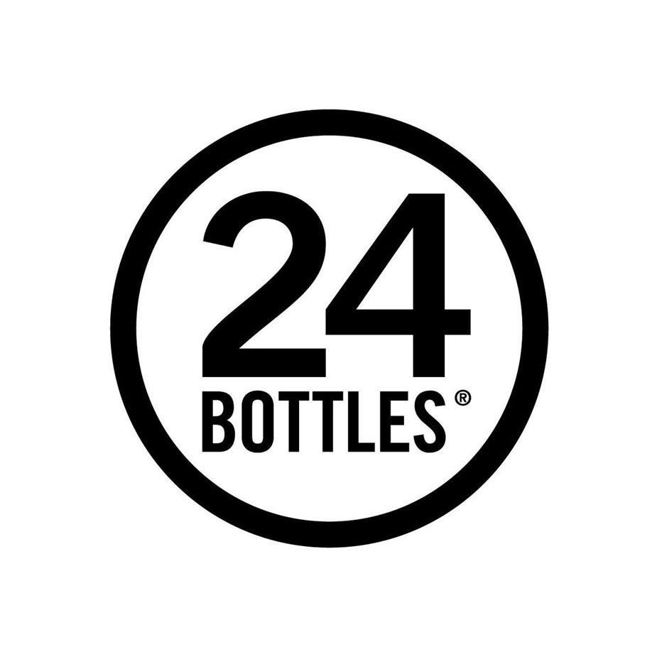

Essere un turista in modo ecosostenibile implica anche fare scelte consapevoli riguardo all'utilizzo di accessori riutilizzabili anziché optare per quelli usa e getta. Ad esempio, l'uso di uno spazzolino da denti riutilizzabile e di una borraccia riutilizzabile può fare una grande differenza nel ridurre la quantità di plastica monouso che finisce negli ecosistemi fragili delle destinazioni turistiche. Scegliere uno spazzolino da denti con manico di bambù e setole biodegradabili riduce l'impatto ambientale associato alla produzione e allo smaltimento di spazzolini di plastica convenzionali.
Inoltre, l'utilizzo di una borraccia riutilizzabile riduce la dipendenza dalle bottiglie di plastica usa e getta, contribuendo a limitare l'inquinamento causato dalla produzione e dallo smaltimento di plastica non riciclabile. Queste scelte consentono ai turisti di ridurre il proprio impatto ambientale, preservando le risorse naturali e riducendo la quantità di rifiuti generati durante il viaggio. Inoltre, utilizzando accessori riutilizzabili, si invia un messaggio positivo alle comunità locali e agli operatori turistici, incoraggiandoli ad adottare pratiche più sostenibili e promuovendo un turismo responsabile e rispettoso dell'ambiente.
Ecco dove poter acquistare prodotti riutilizzabili:
24 bottles è un sito di vendita che offre alternative green alle classiche soluzione usa e getta che si trovano in giro.
.png)
L'azienda nasce nel 2013 grazie a Giovanni Randazzo e Matteo Melotti e ha sede a Bologna. il suo obiettivo è di ridurre l'impatto delle bottiglie di plastica usa e getta sul pianeta e sulle nostre vite. L'idea nasce dalla ricerca della soluzione più comoda e funzionale per soddisfare l'esigenza di idratarsi, e non solo, in modo sano ed ecologico, giorno per giorno.